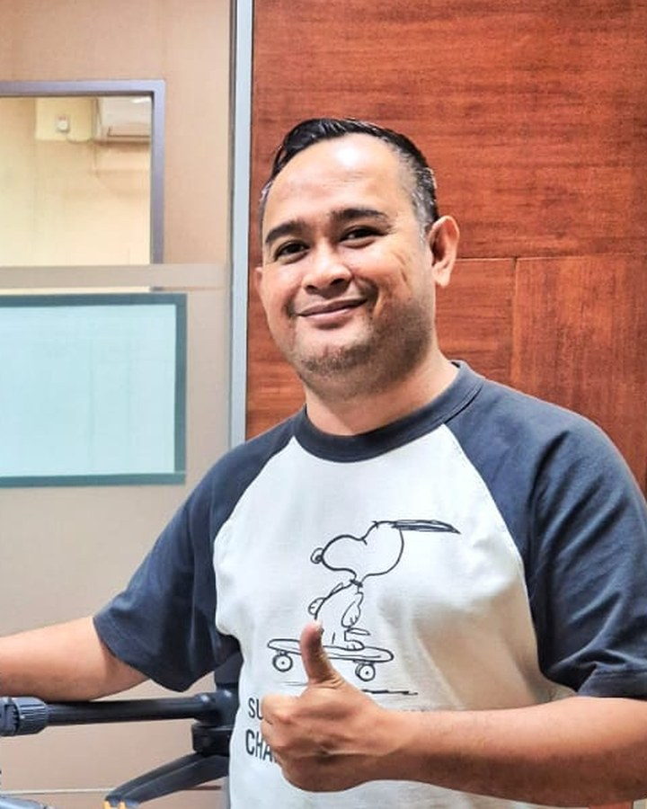

Drone operator and technician. I assemble and repair multirotor, fixed-wing and VTOL drones, fly mapping missions, run geodetic control surveys and turn the data into orthomosaics, DTM/DSM and LiDAR products.
Fixed-wing: Skywalker 1880 / 1900 / X8, Skyhunter, Crosswind, Mini Crosswind. Also multirotor (DJI series) and VTOL.
Routine maintenance, troubleshooting and repair of mapping and monitoring UAVs.
BM, GCP and ICP measurement using geodetic GPS (RTK, static, PPK) and Total Station.
Orthomosaic, LiDAR processing, DTM and DSM, GIS.
Drone training for client companies, including PT. MCM, PT. Jawapost Agro and PT. Dua Semeru Putra Mandiri.
Remote Pilot License, Indonesian Air Force (2019).
Tap a role to expand it.
Illustrative images from TREEO Mapper (treeo.id/treeo-mapper). Not Indra's own field photos.